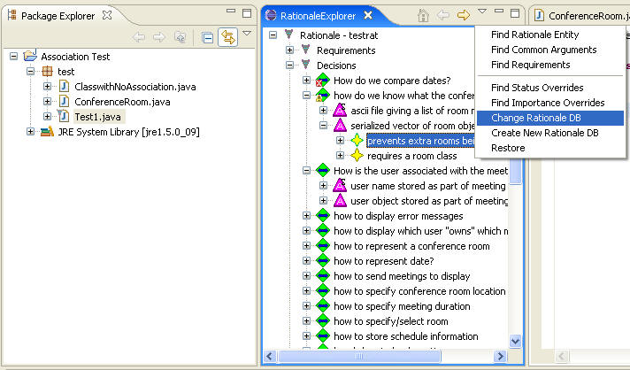

The database being used by SEURAT can be changed in two steps. First, the Preference Pages are used to indicate which database should be used. Then choose "Change Rationale DB" which is in the menu under the downward arrow at the top of the Rationale Explorer and the database will be updated which could be verified by the name of the database in use which is near the root of the Rationale Explorer. See the following figure:
